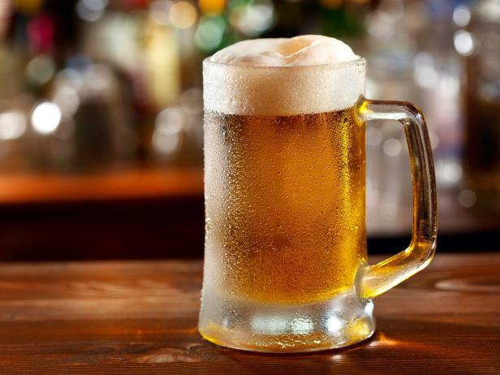
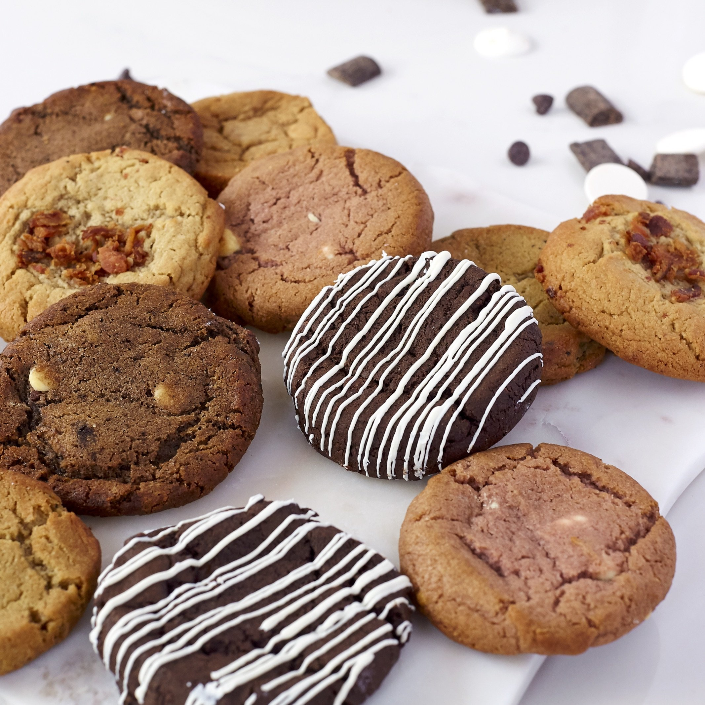

Do you have a BCB?
Beer cookie bellys are becomig a rising concern amongst mellineals
Article by Harshmeet Arora
You've all probably heard the popular slang "BCB", also lovingly called Dad-Bod v2. Today we go in to the hard SCIENTIFIC facts behind BCB.


SCIENTIFIC FACTs only:
- Beer + Cookie = Belly
- BCBs are definitely cute
- #loveyourBCB is the 3th most trending hashtag on Ig
- BCBs can be prevented by baking bread instead and eating it in bed